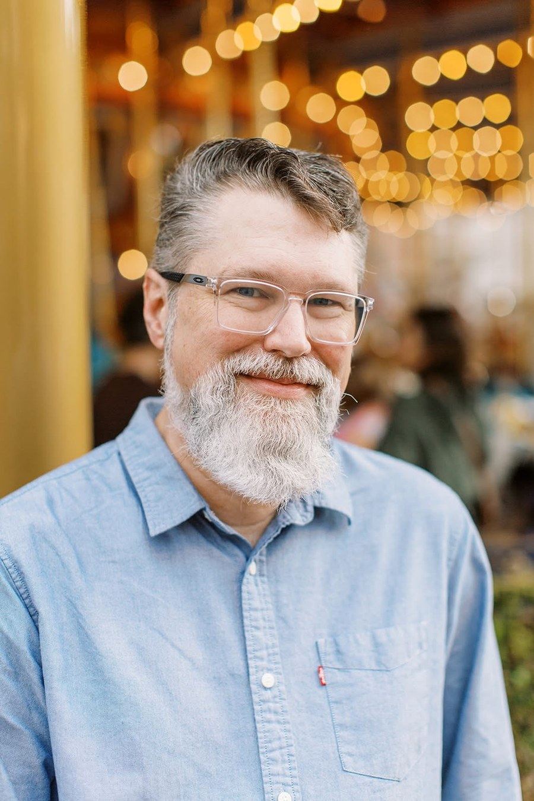

![Diagram titled 'I Simplify Complex Systems. So People Can Do Their Best Work.' — A systems approach to product design. Complexity comes from many places: Users & Needs, Business Goals, Workflows, Data & Content, Policies & Compliance, and Technology. A five-step process — 1. Understand, 2. Insights, 3. Strategy, 4. Design, 5. Validate — leads to Simple Experiences: clarity, confidence, efficiency, and better outcomes for users and the business. Principles that guide the work: People first, Simplify complexity, Evidence over opinion, Collaborate always, and Design for impact.](images/about-diagram-titled-i-simplify-complex-systems.jpg)
Make complex systems feel simple without reducing their capability.

Good design begins with understanding the problem — not designing the interface.
Users shouldn't have to understand complicated systems to accomplish their work. I look for ways to reduce cognitive load while preserving capability.
Great products are shaped by business goals, technical constraints, accessibility, and collaboration — not visuals alone.
The best ideas come from working across disciplines. I value open communication, shared ownership, and learning from teammates throughout the product lifecycle.
When I'm away from the screen, I enjoy exploring the outdoors, traveling, and finding inspiration in new places. Whether I'm hiking a mountain trail, mountain biking through the woods, or discovering a new city, I appreciate experiences that encourage curiosity and a different perspective.
I'm also a painter, an enthusiastic home cook, and an amateur barista. I enjoy the creative process of experimenting, refining, and learning — whether it's developing a new recipe, dialing in the perfect espresso, or finishing a painting.
These interests reflect the same mindset I bring to product design: stay curious, embrace exploration, and believe that thoughtful details and continuous iteration are what transform good experiences into memorable ones.